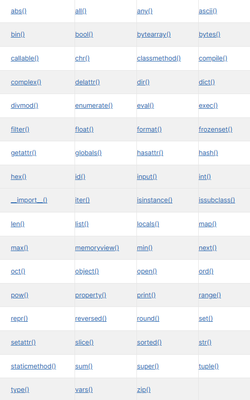
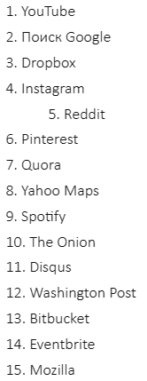
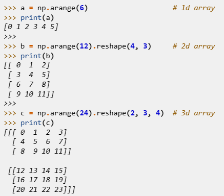

В отличии от более низкоуровневых языков, в Python уже с создания файла встроены все базовые функции для работы. Не нужно подключать математику, вывод в консоль, локализатор и т.д.

Список встроенных функций Python
Стандартные функции языка и их вызов не сильно отличаются от других:
print() — вывод в консоль
abs() — возврат модуля
pow() — возведение в степень
и т.д.
Самые популярные библиотеки и фреймворки для Python это:
Django — фреймворк для написания сайтов на Python
NumPy — библиотека для использования сложных математических функций
PyGame — библиотека для написания игр
PyQt — набор расширений графического фреймворка включающий более 6000 функций
TensorFlow — открытая программная библиотека для машинного обучения, разработанная компанией Google

Сайты использующие Django

Пример вывода многомерных массивов в Python